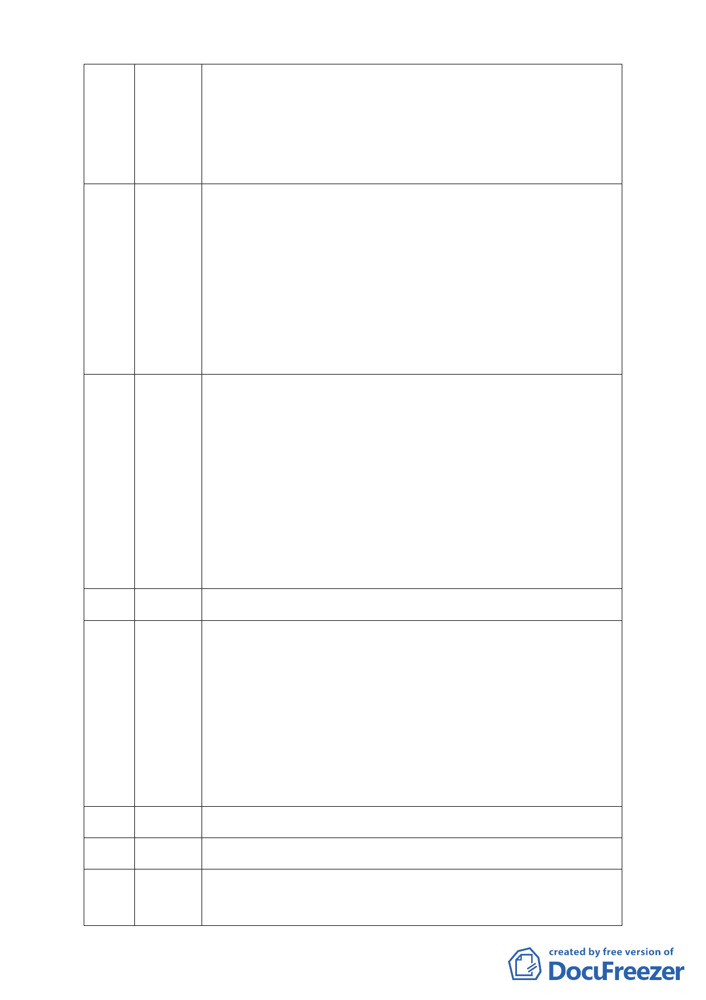

48 陳婉琪 今天整個程序是違法的，內容不用提。依主席回應是程序問題是委
員提的、民眾不能提，在此懇請在座委員能幫忙提出程序問題，否
（陳宜文代）
則即便讓 108 位陳情民眾發言亦屬徒具型式、浪費時間、浪費社會
成本而已。應立即停止違法審查並撤銷本案，不要再把此案留給下
一屆。如果今天要繼續審下去亦請官派委員迴避。
49 郭坤祥 本人為大湖里里長，首先就本人前曾連署支持之個人部分要求撤簽
並作廢。在此要求委員要很慎重的審理此案，因本案 12 年以來就
爭議很多，也建議立即停止審議並要求開發單位到本里召開說明
會，因所有的居民都還不了解要做何使用，包括水的部分與其取得
量體部分均和先前所說明有嚴重的落差，等到大家有共識後再來審
查，也才不會浪費這麼大的社會成本，對慈濟的公益團體形象也不
致受損。至於所提 94 年的說明會因至今已有大幅的修正，故應重
新召開說明會以取得多數居民的認同。
50 廖本全 依發展局所說明此案為調和經濟發展，委員真的可以接受？請先確
認此興辦計劃是否經過經濟單位同意，此即程序問題。且剛才所提
會議紀錄是否提出紀錄內容或出席人員之簽名？如此實質審查內
容是否完備？本人亦重申外面的陳情人並非暴民，只因他們對本案
有深刻的感受，所要求的也只是程序正義而已。也只有程序正義完
成後才能落實實質正義。市府都發局做成如此之解釋，委員覺得教
課書也是做這樣的解釋嗎？請求主席務必先釐清此程序問題。本案
除市府代表委員應迴避，包括都發局人員中具慈濟身份者亦應退出
利益迴避，若欲表決亦應具名投票。
51 （已刪除）
本人為在地農民，在此揭發慈濟言行表裡不一的一面，因其將 11
52 陳添申 月 4 日所舉辦座談會之簽名拿來亂用，我們特此申明堅決反對，本
人為世居 14 分埤之農民，土地大可變賣給慈濟但道德良知告訴我
們不可這麼做，理由很簡單，地球只有一個、14 分埤不也是只有
一個嗎？為維護保護區市府不能因人設事成就以鄰為禍之惡行，這
將遏殺保護區政策不但破壞大自然環境，也是不公不義之舉，因此
我們選擇與大自然共處、和大地共存共容。我們不能把後代當提款
機更不能剝奪此大自然淨土。因此呼籲慈濟應接受專家建議廣納雅
言自動撤案，勿圖一己之私違法帶頭破壞地球。衷心期許委員明察
秋毫展現公權力，還原兩基地之原貌恢復其滯洪功能。
（不在現場）
53 林正修
（不在現場）
54 董俊良
主要有三點意見：一是變更為社會福利園區的意見，二是農民期待
55 還我家園 基地能共同開發、整體規劃，做好排水系統，才不至於造成周邊農
地淹大水，三是環保團體所陳述的維持現狀之意見。慈濟不應自掃
-5-